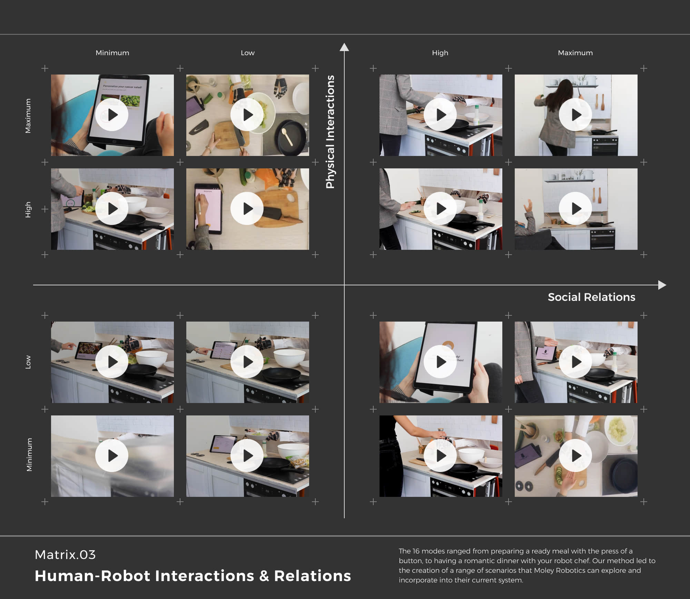

Designing interactions and relations between the robot chef and human guests
Overview
As students on MA User Experience Design at the University of the Arts London, we worked with Moley Robotics, the world’s first robotic kitchen, to explored social relations and physical interactions between a robot chef and its human guests.
Integrating role-play, body-storming, prototyping, video analysis and speculative design, our group devised 16 robot behaviour modes and a systematic research method examining human-robot interactions. The project aspires to address the lack of attention given to the complexity of this subject, supporting Moley Robotics and other robot company to design and evaluate their product.
Ana Garcia Villanueva Sanjana Mehta Tiana Robison Randriaharimalala
Keywords
# Human-robot Interaction # Body storming # Research methods
Body-storming: Personating the “Unapproachable” Robot
The Covid-19 pandemic challenges corporations and schools worldwide, placing accessing obstacles for both Moley Robotics and us. We have minimal visiting opportunities for the actual robot due to social distancing. On the other hand, the robot is at the pre-sale stage with multiple confidential technologies, resulting in a shortage of current customers research. How do we design for such an advanced cooking robot with limited visiting?
Moley Cooking Robot live demo. Source: Moley Robotics.Body-storming and video analysis.
We kickstarted by documenting and studying our daily cooking routine to understand the existing social factors, from food preparation, cooking, dining to cleaning. Fruitful, instinctive correlations occurred between chefs, guests, food, and even machines (rice cooker, oven, hub). However, compared to the live demo by Moley Robot and other cooking robots, we discerned a significant lack of layered intimacies, conversations, senses and emotions. During our body-storming research, we asked participants to personate the robot chef and human guests in different scenarios, and serval of them recalled:
The kitchen feels no longer a social space...
It almost feels that robots run the risk of programming social behaviours in this domestic setting, allowing the logic of a strictly defined set of movements and meanings to dominate.
Iterating the Role-play Experience
We discovered body-storming could be a valuable design method, but with the necessity to improve the fidelity of the space settings, the “robot” partner, and props as much as possible to aid the more profound role-play experience. It drove us to build a 1:1 scale mini kitchen with robot hands extended from the wall!
A 1:1 scale mini kitchen prototype.The “robotic” arms facing the guests, hoping to evoke a more friendly, intimated impression.Participants made sausage & smash potato.Direct hand-to-hand interactions.
Human-Robot Relations & Interactions Matrix
More than ten rounds of role-playing made us recognise the complex nature of human-robot interaction. So rather than exploring the perfect level of connection, our team turned to investigating existing robots and automated systems and applying that to various robot cooking scenarios. It then led us to develop a research framework for human-robot interaction.
Human-robot physical interactions and social relations.Four quarants matrix.

Final outcome: Human-robot physical interactions and social relations.
This research method aims to give designers a way of creating machines, interfaces and social interactions among devices and people. The matrix includes two inter-related axes: physical interactions and social relations. Each axis is divided into four levels: minimum, low, high, maximum. It resulted in 16 behavioural modes along a rising scale of connectedness between humans and robots.
Check out the video below for all 16 behavioural videos, or visit the project website: moleychef.wixsite.com/microux.
Video: Human-Robot Interaction Matrix
Project Feedback
In the end, we deliver a booklet explaining the design method along with the 16 behaviour mode website. James Taylor, Development Chef at Moley Robotics, considered our project a novel study for the company and even the robot industry since it is not limited to one specific interaction but a scale of coordinating human and robot counterparts in fruitful scenarios.
Moley Robot and the bookletI haven’t seen anyone in the industry is doing this at the moment. Some of the demos are great for the office to think about robot engagement in actual scenarios...and the booklet is amazing. – James Taylor, Development Chef at Moley Robotics
This project echoes a mix of complexity, excitement and playfulness. Human-robot interaction is a sophisticated topic, and very often, people treat it with a technical-centred mindset. I learned a unique perspective on how designers could tackle this problem and other similar subjects by introducing humanity, creativity and collaboration into the rigorous research journey.
p.s. Special thanks to my team with Ana, Sanjana, Tiana and our tutors John and Al. I enjoyed working with them and learned so much about culture, food, language and design skills!